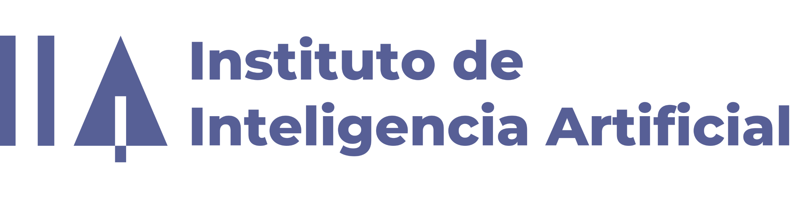

El único foro en España donde los máximos decisores debaten el impacto real de los agentes autónomos de IA en sus organizaciones. Sin intermediarios. Sin comerciales.
Sistemas de IA que actúan de forma autónoma: toman decisiones, ejecutan tareas complejas y aprenden sin intervención humana constante. El siguiente salto evolutivo.
Máximos decisores de banca y seguros. Validamos cada inscripción para asegurar conversaciones del más alto nivel. Regla Chatham House activa.
Casos de agentes autónomos ya desplegados: suscripción automatizada, gestión de siniestros, atención al cliente 24/7. Con métricas reales y aprendizajes incluidos.
Por primera vez, los dos sectores debaten IA Agéntica juntos. Sinergias, aprendizajes cruzados y el futuro de la bancaseguros autónoma.
Presentaciones de 15 minutos seguidas de Fireside Talk con micrófono abierto. Tres bloques, tres perspectivas del mismo ecosistema. Regla Chatham House en todo momento.
SegurosIA e Instituto de Inteligencia Artificial abren el I Foro de IA Agéntica en Banca & Seguros.
Primeros hallazgos del observatorio: dónde está realmente el sector, qué se adopta y qué sigue siendo promesa.
Cómo llevar la IA Agéntica a las corredurías y al tejido distribuidor del sector asegurador español.
Programas de certificación avanzada para actuarios, responsables de IA y equipos técnicos del sector financiero.
Los tres ponentes del Bloque I en mesa. La audiencia dirige. Sin moderación forzada, sin respuestas preparadas.
Pausa en el área de cóctel del auditorio.
Las fricciones reales de la implementación: lo que los clientes preguntan off the record y lo que los vendors nunca cuentan en el pitch.
Cómo estructurar una alianza entre velocidad startup y escala corporativa. Métricas reales, aprendizajes sin filtro.
Primera iniciativa de IA Agéntica con luz verde regulatoria en España. Qué funciona, qué falla y qué viene después.
Los tres ponentes del Bloque II en mesa. La audiencia pregunta lo que no se puede preguntar en un RFP.
Cómo están cambiando los equipos, los roles y la cultura organizativa cuando los agentes de IA trabajan junto a las personas.
Agentes autónomos en producción real: qué decisiones delegan ya las organizaciones y cómo gestionan la confianza.
Los ponentes del Bloque III en mesa. La audiencia cierra el foro con las preguntas que importan.
Síntesis de los tres bloques. Cada asistente recibirá el informe ejecutivo del foro.
Las conversaciones que no cupieron en el Fireside Talk continúan aquí.
Estamos cerrando ponentes de primer nivel. Únete a la lista de espera para ser el primero en conocerlos.
Ponente C-Level · Observatorio IA Agéntica
Ponente C-Level · Formación y Capacitación en IA
Ponente C-Level · Itinerarios Avanzados en IA
Ponente C-Level · Consultoría IA Agéntica
Ponente C-Level · Startup × Gran Corporación
Ponente C-Level · Sandbox Financiero Español
Ponente C-Level · Cultura Híbrida Humano-Máquina
Ponente C-Level · Nueva Era de la IA Agéntica
C. de José Ortega y Gasset, 29, Salamanca, 28006 Madrid
Plazas limitadas a 150 asistentes. Únete a la lista de espera para ser el primero en conocer los detalles.
Estamos preparando algo especial. Únete a la lista de espera y te avisaremos en cuanto estén disponibles los detalles de inscripción.
Sé el primero en conocer todos los detalles del foro. Te notificaremos cuando abramos inscripciones oficiales.
Estamos cerrando acuerdos con instituciones de referencia. Iremos desvelando cada partner en las próximas semanas.

Partner Estratégico
Próximamente
Próximamente
Próximamente
Próximamente
Próximamente
Alta dirección de banca y seguros. Validamos cada inscripción para garantizar conversaciones de alto nivel.
Los participantes pueden usar la información recibida, pero no pueden revelar la identidad ni la afiliación de quien la proporcionó. Esto fomenta la honestidad.
Para garantizar la máxima calidad del foro y una audiencia comprometida. Los asistentes valoran contenido de primer nivel y networking entre iguales, no presentaciones comerciales.
Sí, con reembolso completo hasta 15 días antes del foro. Después, ofrecemos transferencia de plaza a otro ejecutivo de tu organización.
No. Para respetar la Regla Chatham House y fomentar la participación honesta, no grabamos las sesiones. El informe post-foro recoge los insights clave.
El Advisory Board selecciona implementaciones reales de IA Agéntica que han generado valor demostrable. Casos con métricas concretas y aprendizajes aplicables.